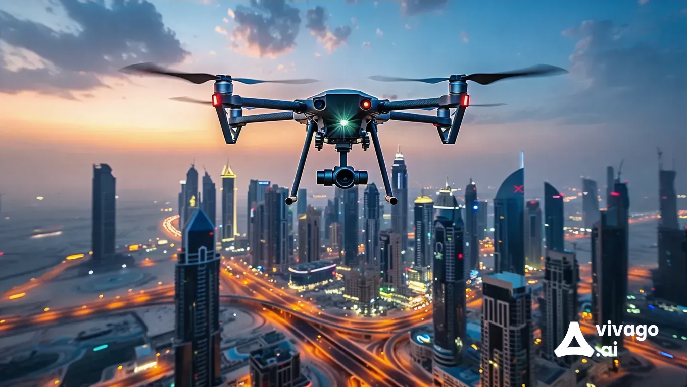

What is Drone Surveillance?

Drone surveillance refers to the use of unmanned aerial vehicles (UAVs) equipped with cameras and sensors to monitor and collect data from the ground. This technology provides a comprehensive view of large areas, making it useful for various applications, including agriculture, wildlife monitoring, security, and disaster management.
Importance of Drone Surveillance
Drone surveillance plays a crucial role in many fields for the following reasons:
- Real-Time Data Collection: Drones can quickly gather data and provide real-time insights for timely decision-making.
- Cost Efficiency: Reduces the need for manned aircraft or ground patrols, saving time and money.
- Access to Hard-to-Reach Areas: Drones can easily survey remote or hazardous locations that may be difficult for humans to access.
- Enhanced Monitoring: Provides high-resolution imagery and data for detailed analysis.
Uses of Drone Surveillance
Drone surveillance can be applied in various sectors, including:
- Agriculture: Monitoring crop health, irrigation, and pest control.
- Environmental Conservation: Tracking wildlife, monitoring deforestation, and assessing natural disasters.
- Security: Surveillance of properties, events, and public areas to enhance safety.
- Infrastructure Inspection: Assessing the condition of buildings, bridges, and power lines.
Benefits of Drone Surveillance
Utilizing drone surveillance offers numerous advantages:
- Improved Safety: Reduces the need for human presence in potentially dangerous environments.
- Enhanced Efficiency: Allows for quicker and more thorough data collection than traditional methods.
- Better Data Analysis: High-quality images and data can lead to more accurate analyses and predictions.
- Scalability: Easily scalable for different project sizes and types of surveillance.
Contact Us
If you would like to learn more about drone surveillance or have questions, please reach out to us:
Email: dronesurveillance@example.com
Phone: 123-456-7890
Our team is dedicated to providing advanced surveillance solutions for various applications.